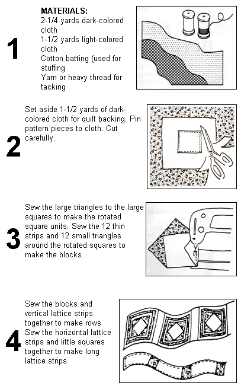
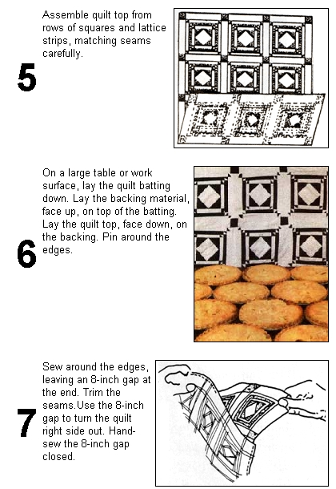
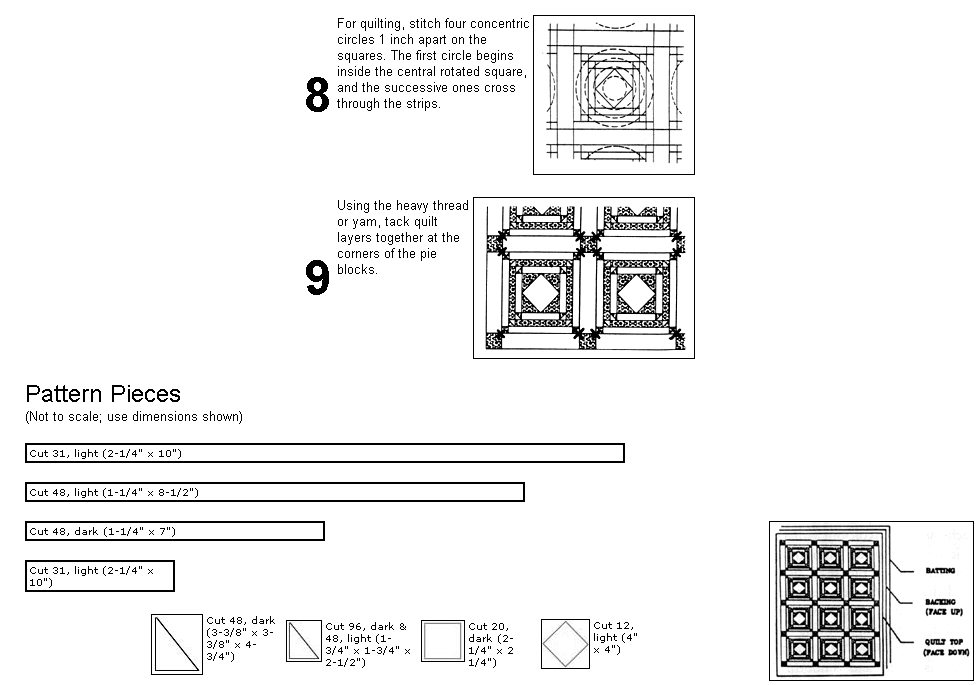

GEOMETRIC QUILT PATTERNS are those that use regular geometric elements-squares, rectangles and triangles-in some consistent overall organization. In the long history of geometric quilt designs the individual variations are too numerous to count. But certain families of patterns can be identified. For example, the Log Cabin family uses long strips to make various types of blocks. Courthouse Steps, Windmill Blades and Pineapples are members of this group.
The Apple Pie quilt belongs to a family in which each block contains a central rotated square. This pattern has some similarities to the Shoofly Pie pattern of Amish quilters. Central rotated squares are flanked by triangles and strips. The corners of the strips are broken down into little triangles. These tiny triangles are the "flies" that buzz around each pie.
Early quilts were usually done in contrasting prints, most often in a white and dark-blue calico print. Printed cloth was a manufactured good, not always easy to get and certainly not available in the rainbow of shades and patterns offered in stores today. A bolt or two, bought once a year, would be used for that year's dresses, shirts, quilts and curtains.
A limit of two colors was not a hardship for pioneer quilters. Their quilts are as rich and interesting as some of the later ones, which exploit a wider palette.
The quilt stitching for this piece superimposes four concentric circles over the squares. The circles are one inch apart. The first circle fits just inside the central rotated square, and the successive ones cross through the strips and triangles.
From Childhood Dreams: A Book of Crib Quilt Projects, by Susan Bennett Gallagher, copyright © 1989 by Susan Bennett Gallagher, $12.95 paperback. Reprinted by permission of Sterling Publishing Co., Inc., New York, NY.
|
 |
 |
 |